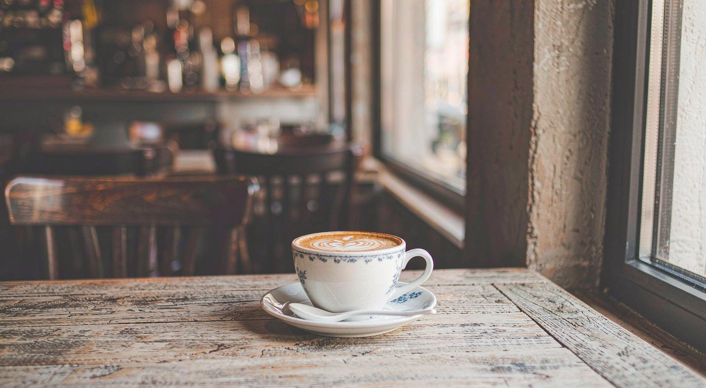
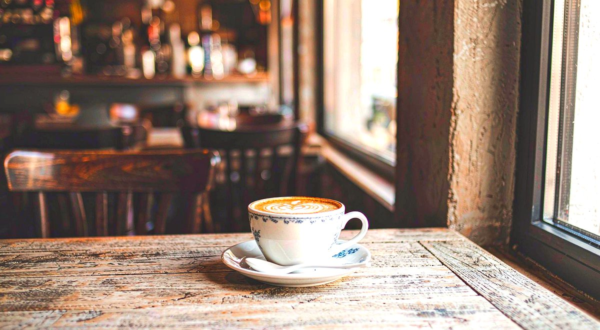

照片调色入门：拯救灰暗发闷的照片
手机拍出来的照片发灰，不是手机差。相机为了不让高光爆掉，会保守曝光，再套一条留余量的对比曲线——结果是细节全在，观感发闷。修它有顺序，顺序错了，越调越糟。


「自动调整颜色」到底做了什么
它不是一个懂画面的智能滤镜。它的做法是：把每个通道整体乘一个系数，直到大约 1% 的像素接近纯白，再在黑端做一遍、让约 0.5% 的像素接近纯黑，最多重复十轮。说白了，就是把色阶拉开，让画面用满 0 到 255，而不是挤在中间一小段。
这对一张光线均匀的中间调照片正好对，对另外两类场景正好错：画面里本来就有白纸、雪、亮天空时，1% 的近白像素已经存在，工具只能把中间调往上推——天空先溢出，颜色变粉；夜景几乎没有近白像素，工具会一直乘下去，把黑变成灰噪。
还有一点副作用：因为它是乘法，饱和度会被顺带拉高。本来就偏暖的人像，这一步就是「自然肤色」和「一脸橙」的分界。
动手之前，先看一眼直方图
点 【图片】→【直方图】。图形直接告诉你是哪种病：
- 全挤在中间、两端空着——真·发平，自动调整正合适。
- 左边贴死 0——暗部已经压死，提亮只会提出噪点，救不回细节。
- 右边被削平——高光已经爆了，任何滑块都拿不回来，只能下次拍暗一点。
- 某个颜色通道单独出尖峰——那个通道先爆，通常是偏色而不是曝光问题。
六个滑块，按这个顺序动
点 【图片】→【颜色校正】，一个面板里六组参数。顺序比数值更重要，因为每一步都会改变下一步看到的东西。

三个通道各是 −255 到 +255。在画面里找一个「本该是中性」的东西——白纸、灰墙、白衬衫——哪个通道过强就往下拉。钨丝灯下常见是红多蓝少：红降一点、蓝升一点，小步走，盯着那块中性区域看它褪掉染色。
亮度和对比都是 −100 到 +100。先把中间调提到顺眼，再加对比让它不再发闷。反过来的话，对比会把已有的提亮放大，高光直接切掉。示例图 +8 亮度、+15 对比就够了。
同样 −100 到 +100。判断标准是画面里最饱和的那个物体，不是平均值——红杯子早就满了，米色墙还没动。肤色永远最先变橙，确认之前把脸放到 100% 看。
明度只提亮度、不动饱和度，适合「一提亮颜色就发白」的照片。色相是把所有颜色一起转（−180 到 180 度），是个粗糙工具，但对付水下发绿、荧光灯发绿最快——先转回中性，再回通道里微调。
这个编辑器没有的东西，先知道少走弯路
没有曲线、没有单独的色温与色调滑块、没有选区局部调整——所有校正都作用在整个图层上。这不是缺点，是边界。知道边界，方法就清楚了：严重的偏色就是通道平衡的活；只想改局部，就复制一层、擦回不想改的区域。
如果发闷的原因是雾而不是曝光，滑块帮不上太多：提对比只会先加灰。更有效的两步是 【特效】→【饱和度】（对应英文界面的 Vibrance，比颜色校正里的饱和度滑块温和，专提寡淡的颜色；中文界面里它和常见滤镜的「饱和度」同名，位置在特效菜单下半段），以及缩放之后补一道 【特效】→【锐化】，把雾带走的那点局部对比找回来。两个都是一次性操作，想对比效果就先复制图层。
导出时留好原图
最后 【文件】→【导出】，JPG 质量 85 以上。原图务必留着：校正一旦确认就焊进像素了，想重调得从原图开始，而不是从导出的 JPG 开始。要印刷或还要再编辑的，导出 PNG——每存一次 JPG，刚找回来的渐变细节就再丢一点。
第二个判断：白点在哪
直方图告诉你色阶分布，但有一件事它不说：画面里最亮的那块，到底是「该白的白」还是「本来就该是灰的」。这个判断错了，整张图的曝光基准就错了。
做法是找一个你确定它现实里是白色的东西——打印纸、白衬衫、墙上的开关面板——把它的 RGB 读数调到接近 250 以上。如果画面里根本没有白色物体，就用「记忆里的中间调」当基准：草地、天空、皮肤，都行，但要接受它只能对个大概。
还有一个容易忽略的前提：屏幕亮度。在亮度 30% 的笔记本上把图调到「看着亮」，换到手机上就是过曝。调色前先把屏幕调到 70% 左右，并且关掉系统里的「根据环境自动调亮度」，否则你每次判断的基准都在变。
常见问题 FAQ
自动调整之后照片更糟了，为什么？
它会把画面推到约 1% 近白、0.5% 近黑。这对中间调照片有效，对本来就有亮天空、白纸的场景无效——工具没地方可推，就直接切掉高光。先看直方图：任意一端已经贴边，就跳过自动调整，手动动滑块。
先调亮度还是先调对比？
亮度在前，对比在后，饱和度最后，而偏色要在这一切之前。先加对比会把色阶拉开，之后再提亮就直接把高光推进溢出；饱和度会放大已有的偏色，所以三个通道必须先处理。
同一张图在手机和电脑上不一样，哪个准？
都不权威。手机屏的伽马、色域、自动亮度各不相同，同一张图在 30% 亮度的手机上就是会比校准过的显示器寡淡。判断依据换成「同一块屏幕上的中性灰」，别追着某个设备的效果调。
相关教程推荐
找一张室内拍的照片，先用三个通道把白墙修成中性，再按顺序调亮度、对比和饱和度。